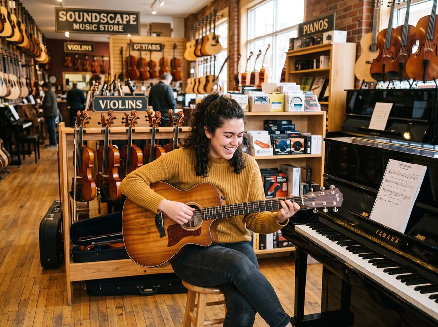

Dicas e curiosidades sobre música.

Escolher o primeiro instrumento musical é um passo emocionante, porém decisivo. A principal dica é levar em consideração a afinidade sonora, o tempo disponível para treino e a ergonomia. Testar diferentes instrumentos em uma aula experimental ajuda a identificar qual desperta maior entusiasmo. Além disso, considerar aspectos como portabilidade e orçamento para aquisição do equipamento garante uma jornada de aprendizado consistente e prazerosa.
Por Lucas Silva — 12/07/2026 às 14:30
Fonte: WikipédiaEstudar um instrumento musical ativa praticamente todas as áreas do cérebro simultaneamente, especialmente os córtex visual, auditivo e motor. Pesquisas neurocientíficas demonstram que a prática musical contínua aprimora a memória, aumenta a capacidade de concentração, alivia o estresse e estimula a neuroplasticidade em pessoas de todas as idades. Tocar um instrumento é um verdadeiro exercício para a mente.
Por Mariana Costa — 28/08/2026 às 09:15
Fonte: Wikipédia